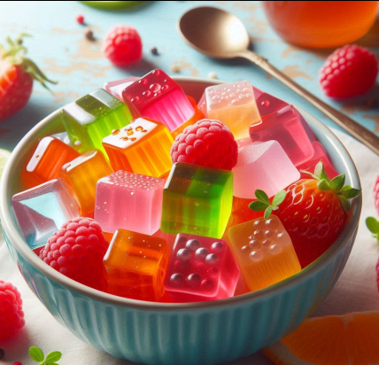

Cihans Kitchen
Götterspeise

Zutaten
1 Päckchen Götterspeise (Zuckerhaltig oder zuckerfrei, Geschmack nach Wahl)
2 Esslöffel Zucker (optional)
Frisches Obst (z. B. Erdbeeren, Kiwi, Banane, nach Wahl)
Minzblätter (zur Dekoration, optional)
Zubereitung
-
Götterspeise Zubereiten:
Wasser zum Kochen bringen und in eine Rührschüssel gießen.
Das Götterspeise-Pulver und den optionalen Zucker hinzufügen. Gut umrühren, bis sich alles vollständig aufgelöst hat.
-
Obst Hinzufügen:
Wenn Sie frisches Obst verwenden, schneiden Sie es in kleine Stücke.
Gießen Sie die Hälfte der Götterspeise-Mischung in eine Form und fügen Sie das Obst hinzu. Dann die restliche Götterspeise darüber gießen.
-
Kühlen:
Stellen Sie die Götterspeise in den Kühlschrank und lassen Sie sie mindestens 4 Stunden, idealerweise über Nacht, fest werden.
-
Servieren:
Nach dem Festwerden die Götterspeise aus der Form stürzen oder in Stücke schneiden.
Mit Minzblättern dekorieren und servieren.
-
Guten Appetit! Diese erfrischende Süßigkeit ist besonders in den Sommermonaten eine tolle Wahl.